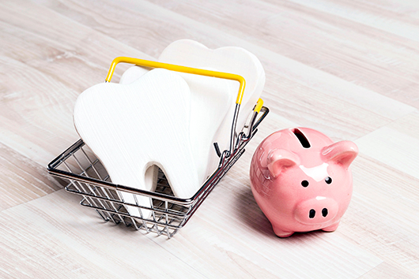
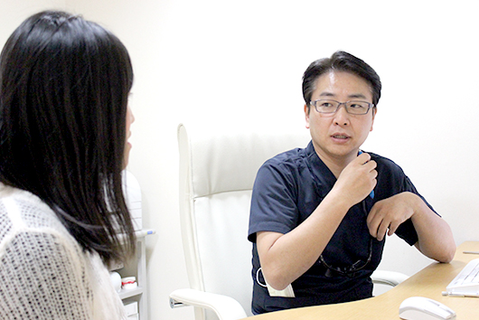
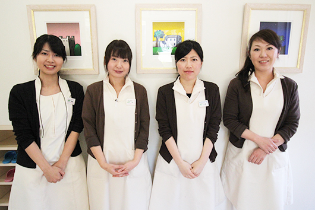

- ホーム
- 料金表
くらしま矯正歯科の料金表

矯正治療は、ワイヤー交換や調整、定期的な診察などが必要になるため、最初に払う金額は明確でも「総額でいくらになるのか」が不透明になりがちです。
川崎市・たまプラーザの矯正治療専門医院「くらしま矯正歯科」ではそういったご不安を取り除くために、治療前に費用の総額をお伝えする総額制（トータルフィー）システムを採用しております。したがって、月々の診療や調整などの処置の際に追加費用は一切頂いていません。全部でいくらかかるのかが明確なため、支払いの計画を立てやすくなります。
相談料0円・当院のカウンセリングは無料で行います
矯正治療を始めるときは、誰でも不安なものです。くらしま矯正歯科では無料カウンセリングを実施しており、「今すぐ治療したほうがいい？」「どんな治療が向いている？」「治療期間はどれくらい？」「費用はいくら？」といった矯正の疑問・質問にお答えしています。もちろん、無理に治療をすすめることはありません。「まずは気軽に相談に乗ってほしい」という方も、一度ご来院ください。
当院の料金はすべて税込み。メンテナンスごとの追加料金をいただきません。
当院が得意とする裏側矯正（舌側矯正）治療は、高度な技術や特殊な装置が必要で、ワイヤー交換や調整などの治療時間が長くなることもあるため、表側矯正と比べると費用が若干高くなります。しかし、当院の矯正費用は総額制（トータルフィー）システムですので、はじめに提示した費用以外は一切不要です。毎回の処置料などによる追加の費用がかからないため、比較的リーズナブルな価格で、精度の高い裏側矯正の治療を受けていただくことが可能です。
TOPIC 総額制（トータルフィー）による料金の違い
治療期間3年の料金イメージ
-
治療費
¥800,000くらしま矯正歯科
-
調整料
¥180,000治療費
¥800,000A矯正歯科
こちらのグラフは、一般的な矯正歯科医院の合計金額と比較したものです。通常の矯正医院では1ヵ月に一度の通院で、そのたびに調整料￥5,000かかるケースが多いですが、仮に治療が3年かかるとして、\5,000×36ヵ月＝￥180,000になります。治療費が同じ金額だとしても、総額制（トータルフィー）システムかそうでないかによって合計金額が変わります。

また「裏側の装置を選びたいけど、費用が気になる」という方には、表側の装置と裏側の装置を併用した「ハーフリンガル」といわれる治療方法も提案しています。マウスピース矯正や表側矯正といったほかの治療もすべて総額制なので、費用面にご納得いただいてから治療をスタートできます。
料金表
治療に入る前までにかかる費用
※表は左右にスクロールして確認することができます。
| 項目 | 内容 | 治療費（税込） |
|---|---|---|
| 初診相談料 | 【所要時間 30～40分】 初診ならびに矯正相談では口腔内を診査し、無料で相談をお受けします。必要であればレントゲン撮影を行うケースもあります。 |
無料 |
| 精密検査料 | 【所要時間 60分】 一人ひとりに合った矯正治療のために、精密検査を行います。口腔模型、顔面規格写真、口腔内写真、レントゲンオルソパントモグラム、レントゲンセファログラム、身体測定などの費用が含まれます。当院の精密検査料には、次回の診断料も含まれております。 |
38,500円 |
| 診断料 | 【所要時間 60分】 当院における数千症例の治療例のデータと精密検査をもとに、 日本矯正歯科学会認定医が適確な診断を下します。また、矯正歯科治療でもっとも重要な診断の適否を検討します。診断内容によって治療結果に大きな差が出るため、丁寧かつ慎重に進めてまいります。 |
上記に含まれる |
成人矯正の費用
※表は左右にスクロールして確認することができます。
| 項目 | 内容 | 治療費（税込） |
|---|---|---|
| 表側矯正 | 表側矯正は、歯の表に装着するオーソドックスな矯正装置です。装置は金属製のものだけではなく、目立ちにくい半透明の樹脂製・白色のセラミック製からもお選びいただけます。 | 770,000～880,000円 |
| 裏側矯正 | 歯の裏側に矯正装置を装着する、目立たなくて見えにくい矯正です。日本舌側矯正歯科学会の認定医が、高い精度の矯正治療を提案いたします。 | 上下とも舌側からの裏側矯正 1,100,000～1,210,000円 |
| 上は裏側、下は表側からの矯正 935,000～1,045,000円 |
||
| 部分的な矯正 | 前歯の出っ張りやでこぼこした部分など、歯の一部のみ矯正を行ないます。 | 歯数により異なる 165,000～412,500円 |
お子さまの矯正費用
乳歯が残っている場合に行なう矯正治療です。すでに永久歯に生え変わっている場合は、成人矯正になります。
※表は左右にスクロールして確認することができます。
| 項目 | 内容 | 治療費（税込） |
|---|---|---|
| 第1期治療 | 予防矯正、乳歯と永久歯が混ざっている3～12歳のお子さまに行う矯正治療です。顎の成長を促し、正しい噛み合わせができる骨格づくりをサポートします。 | 440,000円程度 |
| 第2期治療 | 第1期治療のあと、12～13歳における永久歯の仕上げに行なう矯正治療です。第1期治療から行っておくと、第2期治療で永久歯を抜歯しなくても歯並びを整えられる可能性が高まります。 | 440,000円程度 |
| 床矯正 | 低年齢児の治療に使用する、取り外し可能な矯正装置です。顎骨の形を整える矯正治療で、歯をきれいに並べられるスペースをつくります。 | 部分的な矯正に準ずる |
処置および調整料
※表は左右にスクロールして確認することができます。
| 項目 | 内容 | 治療費（税込） |
|---|---|---|
| 管理処置料 | 【所要時間 15～60分】 月に1度程度、装置の調整を行ないます |
0円（矯正の費用に含まれる） |
| 保定観察料 | 矯正治療後は、「後戻り」を防止するために「保定装置（リテーナー）」を使った保定を行います。3カ月～半年ごとにご来院いただき、メンテナンスします。 | 0円（矯正の費用に含まれる） |
その他
※表は左右にスクロールして確認することができます。
| 項目 | 内容 | 治療費（税込） |
|---|---|---|
| だ液検査 | 「だ液の量」と「だ液の質」を分析し、虫歯にかかりやすい口内環境かどうかを調べる検査です。 | 3,300円 |
| PMTC | プロフェッショナル・メカニカル・トゥース・クリーニングと呼ばれる、プロによる歯のクリーニング処置です。ブラッシングでは取れない歯石やコーヒー・ワイン・たばこのヤニなどの汚れを、専用の機器で取り除きます。 | 4,400円 |
| 3DS （虫歯菌の除菌） |
抗菌剤と殺菌消毒薬をマウスピースに注入し、装着することで虫歯菌や歯周病菌を殺菌します。3DSの費用には、2回分のだ液検査料と歯のクリーニング料、除菌処置料が含まれます。 | 27,500円 |
お支払い方法
当院では、現金でのお支払いのほかに分割払い、クレジットカード払いもご利用いただけます。
一括払い
直接お持ちいただくか、当院指定の銀行口座へお振込みください。
※銀行口座へのお振込み手数料は、患者さまのご負担になります。
院内分割払い
診断後2年間、12回以内であれば無利息の分割払いが可能です。
ご希望の方は、お気軽にご相談ください。
クレジットカード
クレジットカードでもお支払い可能です。
医療費控除について

歯科の医療費控除とは？
医療費控除とは、毎年1月1日から12月31日までの間に自分や家族の医療費が一定の金額を超えたときに、所得税が安くなる「所得控除」が受けられる制度です。
医療費控除は医療費負担を軽減するための制度で、一般的には1年間に10万円以上の医療費を支払った場合は、所得税の一部を還付・軽減してもらえます。申告額は200万円が上限で、所得金額合計が200万円までの方は、所得額の5％以上医療費がかかったときに申告可能です。
矯正治療にかかった費用も、医療費として控除の対象となります。なお本人だけではなく、生計を同じにする配偶者、その他親族のために支払った医療費も控除の対象です。
制度を利用するためには、翌年3月15日までに確定申告書や医療費控除の明細書などを用意して、税務署または区役所に提出する必要があります。控除申請についてわからないことがあるときは、お気軽に当院のスタッフまでご相談ください。
控除金額について
控除される金額は下記の計算式で算出されます。
医療費控除額 ＝ 1年間の医療費の総額※1 − 保険金等の収入 − 10万円もしくは所得金額の%※2
※1その年の1月1日から12月31日までに支払った医療費
※2いずれか少ない金額
所得税率は所得が多いほど高くなりますので、高額所得者ほど還付金は多くなります。矯正治療は高額になりやすいため、医療費控除制度を活用して負担を抑えながら進めていきましょう。